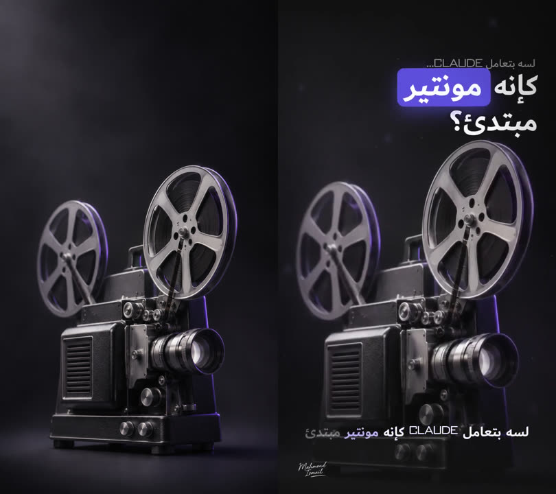
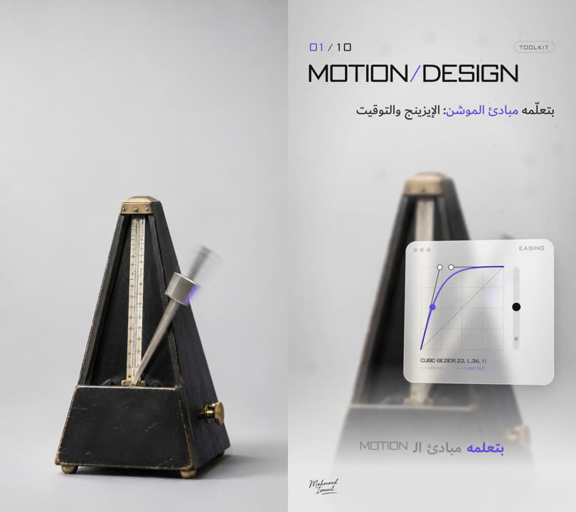
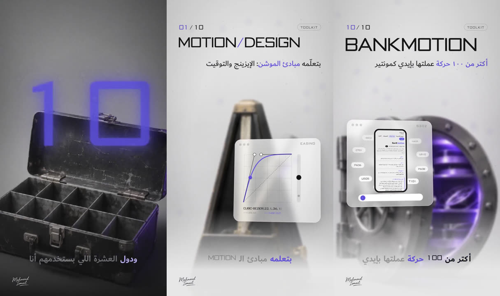
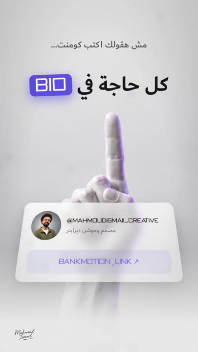

ريل العشرة — ١٠ أدوات بتخلّي Claude مونتير محترف
لو Claude بيطلّعلك فيديو مسطح ومن غير صوت، فالمشكلة مش فيه، المشكلة إنه ناقصه أدوات. دول العشرة اللي بستخدمهم، والريل نفسه معمول بيهم.
إزاي اتعمل
الفكرة
الريل الأصلي كان أجنبي وبيعدّ أدوات بتخلّي Claude يعمل موشن. أنا عملته بالمصري وبهويتي، وضفت أداة عاشرة محدش عنده غيري: بنك الحركات.
أول نسخة طلعت مسطحة: كروت على خلفية سادة. فقررت كل أداة يبقى ليها مشهد حقيقي بعمق، كأنه متصوّر بكاميرا.
١. السكريبت والصوت
السكريبت ٨٣ ثانية بالمصري: هوك، وبعدين العشر أدوات واحدة واحدة، والـ CTA في الآخر. الصوت كلون لصوتي على ElevenLabs، ونسخة واحدة من غير إعادة.
بعدها حوّلت الصوت لنص بتوقيت كل كلمة. ده اللي خلّى كل كارت يدخل في نفس اللحظة اللي بقول فيها اسم الأداة، والكابشن ينوّر الكلمة وهي بتتقال.
٢. الـ B-roll: ١٦ صورة بستايل واحد
الصور كلها من ChatGPT. الهوك غامق: بروجكتور قديم، وساعة رملية، وورق مكرمش، وسماعة. ودي بتمثّل مشكلة «المونتير المبتدئ». ولما يظهر الرقم ١٠ الكبير فوق صندوق العدة، الدنيا بتنوّر وكل الأدوات تبقى خلفيات فاتحة.
في كل صورة نفس الإضاءة ونفس لمعة البنفسجي (#5B4FDB)، عشان الـ ١٦ صورة يبانوا جلسة تصوير واحدة.

٣. العمق والحركة
كل أداة مشهدها طبقات: الصورة في الخلفية، وكارت زجاج قدامها فيه ديمو صغير للأداة نفسها (منحنى إيزينج، تايم لاين بكي فريمز، كود بيتكتب…)، وفوقهم جرين وتسريب ضوء وفينيت.
لما الكارت يدخل، الخلفية بتتغبّش زي Rack Focus في الكاميرا، فعينك تروح على الكارت. والانتقال من أداة للتانية Whip Pan بموشن بلر حقيقي، مش قطع.

٤. البنك جوه الريل
عند الأداة العاشرة، اللي على الشاشة تسجيل حقيقي لموقع البنك: سكرول، وبعدين بحث عن كود حركة، والحركة بتفتح. كل حركة ليها كود ثابت، فبقول لـ Claude الكود وهو يحطها في المونتاج.

٥. الصوت والرندر
المؤثرات متركّبة على كل انتقال وكل كارت: ووش مع الـ Whip، وخبطة مع الرقم، وتيك مع العدّاد. وتحتهم مزيكا خفيفة.
المشهد HTML + GSAP، وكل فريم بيتصوّر من المتصفح ويتجمع بـ ffmpeg فيديو 1080×1920 على ٣٠ فريم.
اللي اتغيّر بين النسخ
النسخة النهائية رقم ٥. النسخة الأولى كانت مسطحة، وفي التانية دخل الـ B-roll والعمق. بعدها ظبطت «كل حاجة في البايو» إنها تظهر بس لما تتقال، فوق الصباع. وآخر تعديل: الكروت متبقاش موجودة من الأول، وتدخل مع اسم الأداة بالظبط.
